Kimi K2.5：视觉 Agent 智能
Kimi K2.5 技术报告
摘要
我们介绍 Kimi K2.5，这是一款旨在推进通用 agent 智能的开源多模态 agent 模型。K2.5 强调文本与视觉的联合优化，使两种模态相互增强。这包括文本与视觉联合预训练、零视觉 SFT，以及文本与视觉联合强化学习等一系列技术。在这一多模态基础上，K2.5 引入了 Agent Swarm：一个自主的并行 agent 编排框架，能够动态地将复杂任务分解为异构子问题并同时执行。广泛的评测表明，Kimi K2.5 在编程、视觉、推理和 agent 任务等多个领域达到最先进水平。与单 agent 基线相比，Agent Swarm 还将延迟降低了最多 4.5 倍。我们发布经过后训练的 Kimi K2.5 模型 checkpoint1，以促进 agent 智能的未来研究和实际应用。
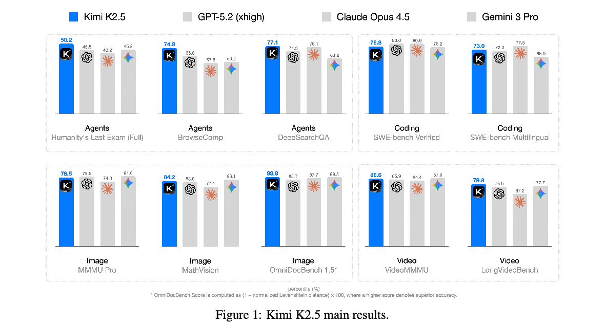
1 引言
LLM 正在迅速向 agent 智能演进。GPT-5.2 [41]、Claude Opus 4.5 [6]、Gemini 3 Pro [20] 和 Kimi K2-Thinking [1] 等近期成果展示了 agent 能力的显著进步，尤其体现在工具调用和推理方面。这些模型越来越表现出将复杂问题分解为多步骤计划，并执行推理与行动交替进行的长序列的能力。
在本报告中，我们介绍 Kimi K2.5 的训练方法与评测结果。具体而言，相比先前模型，我们在以下两个关键方面改进了 K2.5 的训练。
文本与视觉的联合优化。K2.5 实践中的一个关键认识是，文本与视觉的联合优化能够增强两种模态，并避免相互冲突。为此，我们专门设计了一组技术。在预训练阶段，与在较晚阶段向文本骨干网络添加视觉 token 的常规方法 [8, 21] 不同，我们发现，在固定视觉与文本 token 总量的条件下，以较低比例尽早融合视觉通常能取得更好的结果。因此，K2.5 在整个训练过程中都以恒定比例混合文本与视觉 token。
在架构上，Kimi K2.5 使用 MoonViT-3D：一种结合 NaViT 打包策略 [15] 的原生分辨率视觉编码器，支持可变分辨率图像输入。对于视频理解，我们引入了轻量级 3D ViT 压缩机制：将连续帧每四帧分成一组，通过共享的 MoonViT 编码器进行处理，并在图像块层面沿时间维度取平均。这一设计使 Kimi K2.5 在相同上下文窗口内能够处理最长达原来 4 倍的视频，同时保持图像与视频编码器完全共享权重。
在后训练阶段，我们引入零视觉 SFT——仅使用文本的 SFT 就能激活视觉推理和工具使用。我们发现，在这一阶段加入人工设计的视觉轨迹会损害泛化。相比之下，纯文本 SFT 的表现更好，可能是因为联合预训练已经建立了强大的视觉与文本对齐，使能力能够自然地跨模态泛化。随后，我们对文本和视觉任务共同应用 RL。关键在于，我们发现视觉 RL 会增强文本性能，而非使其下降，MMLU-Pro 和 GPQA-Diamond 上均有提升。这种双向增强——文本引导视觉，视觉精炼文本——体现了联合训练中更优的跨模态对齐。
Agent Swarm：并行 agent 编排。现有 agent 模型大多依赖顺序执行工具调用。即使能够进行数百步推理的系统，例如 Kimi K2-Thinking [1]，其推理时间仍然线性增长，导致难以接受的延迟，并限制任务复杂度。随着 agent 工作负载的范围和异构性不断增加，例如构建一个包含大规模研究、设计和开发的复杂项目，顺序执行范式变得越来越低效。
为克服顺序 agent 执行在延迟和可扩展性上的限制，Kimi K2.5 引入了 Agent Swarm，一个动态并行 agent 编排框架。我们提出了有别于传统 agent RL [2] 的 PARL 范式。除了通过可验证奖励优化工具执行，模型还具备创建子 agent 和委派任务的接口。在训练过程中，子 agent 被冻结，其执行轨迹不纳入优化目标；只有编排器通过强化学习进行更新。这种解耦绕开了端到端联合优化中的两项挑战：信用分配歧义和训练不稳定。Agent Swarm 能够将复杂任务分解为异构子问题，由领域专用 agent 同时执行，从而将任务复杂性从线性扩展转变为并行处理。在广域搜索场景下，相比单 agent 基线，Agent Swarm 将推理延迟降低了最多 4.5 倍，同时将条目级 F1 从 72.8% 提升至 79.0%。
Kimi K2.5 为通用 agent 智能提供了统一架构，整合视觉与语言、思考模式与即时模式、聊天与 agent。它在广泛的 agent 和前沿基准上表现强劲，包括在我们的内部评测中，视觉到代码生成（图像／视频到代码）和实际软件工程任务达到最先进水平，同时扩展专用 agent 的多样性及并行程度。为加速社区迈向通用 agent 智能，我们开源 Kimi K2.5 的后训练 checkpoint，使研究人员和开发者能够探索、改进并部署可扩展的 agent 智能。
2 文本与视觉的联合优化
Kimi K2.5 是一个原生多模态模型，在 Kimi K2 的基础上通过约 15 万亿个混合视觉与文本 token 的大规模联合预训练构建而成。有别于牺牲语言或视觉能力的视觉适配模型，我们的联合预训练范式能够同时增强两种模态。本节介绍将 Kimi K2 扩展为 Kimi K2.5 的多模态联合优化方法。
2.1 原生多模态预训练
多模态预训练中的一个关键设计问题是：在固定视觉与文本 token 预算的条件下，最优的视觉与文本联合训练策略是什么？传统观点 [8, 21] 认为，应主要在 LLM 训练的后期阶段以高比例（例如 50% 或更高）引入视觉 token，以加速多模态能力的获取，将多模态能力视为语言能力形成后附加的功能。
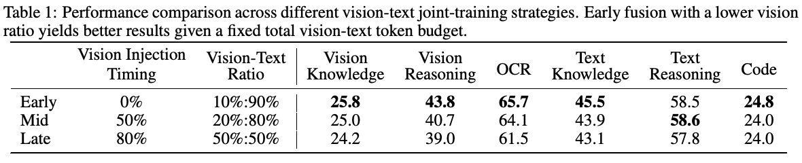
然而，我们的实验（如表 1 和图 9 所示）揭示了不同的情况。我们开展了消融研究，在保持视觉与文本 token 总预算固定的同时，改变视觉比例和视觉注入时机。为严格满足不同的比例目标，我们在引入视觉数据前，先用经过专门计算数量的纯文本 token 对模型进行预训练。令人意外的是，我们发现视觉比例对最终多模态性能的影响很小。实际上，在固定视觉与文本 token 总预算下，以较低视觉比例尽早融合能够取得更好的结果。这促使我们采用原生多模态预训练策略：不在训练末期集中进行激进的高视觉占比训练，而是在训练早期就引入适中的视觉比例，使模型自然形成均衡的多模态表征，同时受益于两种模态更长时间的联合优化。
2.2 零视觉 SFT
预训练 VLM 并不会自然地进行基于视觉的工具调用，这为多模态 RL 带来了冷启动问题。常规方法通过人工标注或提示工程生成的 CoT 数据 [8] 来解决这一问题，但这些方法的多样性有限，通常将视觉推理局限于简单图示和基础工具操作（裁剪、旋转、翻转）。
我们观察到，高质量文本 SFT 数据相对丰富且多样。我们提出了一种新方法——零视觉 SFT，仅使用文本 SFT 数据，就能在后训练阶段激活视觉 agent 能力。在这一方法中，所有图像操作都通过 IPython 中的程序化操作完成，实质上是对传统视觉工具使用的泛化。这种“零视觉”激活支持多样的推理行为，包括通过二值化和计数来估算物体尺寸等像素级操作，并能泛化到物体定位、计数和 OCR 等依赖视觉依据的任务。
图 2 展示了 RL 训练曲线，其起点来自零视觉 SFT。结果表明，零视觉 SFT 足以激活视觉能力，同时确保跨模态泛化。这一现象很可能源于第 2.1 节所述的文本与视觉数据联合预训练。相比零视觉 SFT，我们的初步实验表明，文本与视觉 SFT 在视觉 agent 任务上的表现差得多，可能是由于缺乏高质量视觉数据。
2.3 联合多模态强化学习（RL）
本节介绍 K2.5 中实现有效多模态 RL 的方法，从基于结果的视觉 RL，到增强文本性能的涌现式跨模态迁移。
基于结果的视觉 RL。在零视觉 SFT 之后，模型还需要进一步改进，才能可靠地将视觉输入纳入推理。仅靠文本启动的激活仍存在明显的失效模式：视觉输入有时被忽略，必要时也可能不关注图像。我们在明确需要视觉理解才能得到正确解答的任务上，应用基于结果的 RL。我们将这些任务划分为三个领域：
- 视觉定位与计数：准确定位并统计图像中的物体；
- 图表与文档理解：解释结构化视觉信息并提取文本；
- 视觉不可或缺的 STEM 问题：筛选出必须使用视觉输入的数学和科学问题。
这些任务上的基于结果的 RL 既能改进基础视觉能力，也能改进更复杂的 agent 行为。将这些轨迹提取用于拒绝采样微调（RFT），能够形成自我改进的数据流水线，使后续联合 RL 阶段能够利用更丰富的多模态推理轨迹。
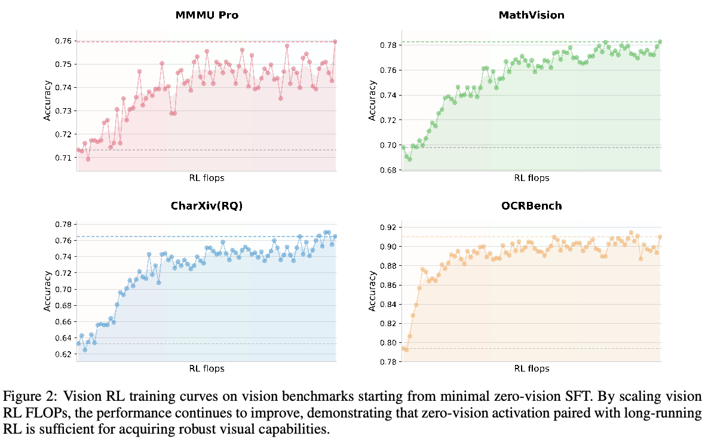
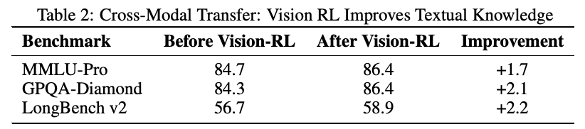
视觉 RL 改进文本性能。为研究视觉与文本性能之间可能存在的权衡，我们评测了视觉 RL 前后的纯文本基准。令人意外的是，基于结果的视觉 RL 对文本任务带来了可测量的提升，包括 MMLU-Pro（84.7% → 86.4%）、GPQA-Diamond（84.3% → 86.4%）和 LongBench v2（56.7% → 58.9%）（表 2）。分析表明，视觉 RL 增强了需要结构化信息提取领域中的校准能力，降低了对类似视觉依据推理的查询（例如计数、OCR）的不确定性。这些发现说明，视觉 RL 可以促进跨模态泛化，改进文本推理，同时没有观察到语言能力下降。
联合多模态 RL。鉴于零视觉 SFT 配合视觉 RL 能够产生强大的视觉能力，并进一步增强通用文本能力，我们在 Kimi K2.5 后训练中采用联合多模态 RL 范式。与常规按模态划分专家的方法不同，我们按能力——知识、推理、编程、agent 等——而非输入模态组织 RL 领域。这些领域专家共同从纯文本和多模态查询中学习，GenRM（GRM）同样跨越异构轨迹进行优化，不设模态壁垒。这一范式确保通过文本或视觉输入获得的能力提升，能够内在地泛化并增强另一模态中的相关能力，从而最大化跨模态能力迁移。
3 Agent Swarm
现有 agent 系统面临的主要挑战，是依赖顺序执行推理和工具调用步骤。虽然这种结构对较简单、短时程任务可能有效，但随着任务复杂度提高和累积上下文增长，它便难以胜任。当任务发展为涉及广泛信息收集及复杂的多分支推理时，顺序系统往往会遇到显著瓶颈 [5, 6, 7]。
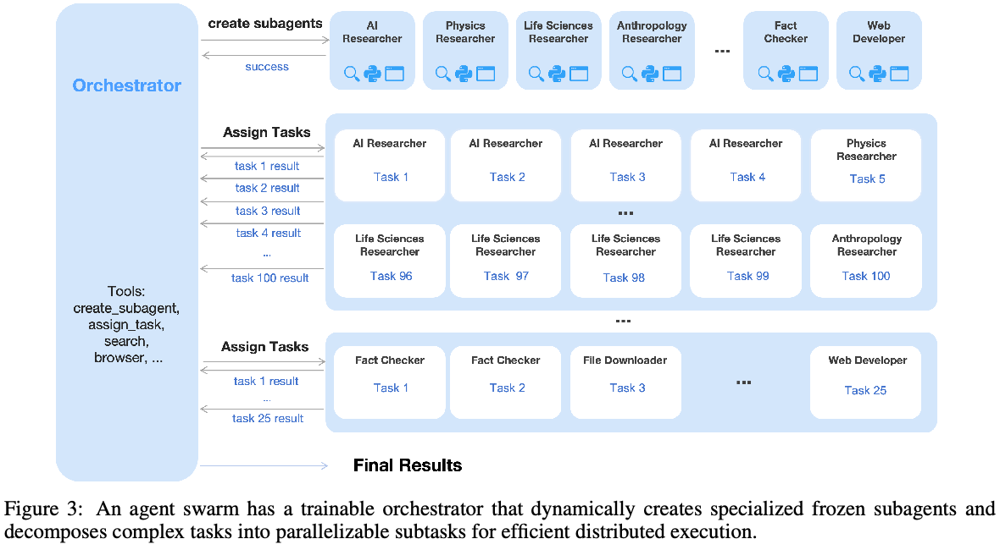
单个 agent 逐步处理每一步的能力有限，可能耗尽实际可用的推理深度和工具调用预算，最终妨碍系统应对更复杂场景。
为此，我们引入 Agent Swarm 和 PARL。K2.5 不将任务执行为单条推理链，也不依赖预先指定的并行化启发式规则，而是通过动态任务分解、子 agent 实例化和并行子任务调度来启动 Agent Swarm。需要强调的是，我们不预设并行一定有益；是否并行、何时并行及如何并行的决策，都通过环境反馈和 RL 驱动的探索显式学习。如图 4 所示，性能的演进体现了这种自适应能力：随着编排器在训练中优化并行化策略，累积奖励平稳增长。
架构与学习设置。PARL 框架采用解耦架构，由一个可训练的编排器和从固定中间策略 checkpoint 实例化的冻结子 agent 组成。这一设计有意避免端到端联合优化，以绕开信用分配歧义和训练不稳定这两项根本挑战。在这种多 agent 环境中，基于结果的奖励天然稀疏且带噪声；最终答案正确并不保证子 agent 执行无误，失败也不意味着所有子 agent 都出错。通过冻结子 agent，并将其输出视作环境观测，而非可微分的决策点，我们将高层协调逻辑与底层执行能力分离，实现更稳健的收敛。为提高效率，我们先使用小规模子 agent 训练编排器，再转向更大的模型。我们的 RL 框架还支持动态调整子 agent 与编排器之间的推理实例比例，从而最大化集群资源利用率。
PARL 奖励。训练可靠的并行编排器颇具挑战，因为独立子 agent 执行所产生的反馈具有延迟、稀疏和非平稳的特征。为此，我们将 PARL 奖励定义为：
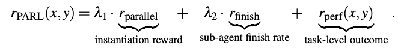
性能奖励 \(r_{perf}\) 评估给定任务 x 的解答 y 的整体成功程度和质量。此外还加入了两项辅助奖励，分别解决并行编排学习中的不同挑战。奖励 \(r_{parallel}\) 用于缓解串行坍缩，即编排器默认采用单 agent 执行的局部最优状态。通过激励子 agent 实例化，该项鼓励探索并发调度空间。奖励 \(r_{finish}\) 关注已分配子任务的成功完成，用于防止伪并行：这是一种 reward hacking 行为，编排器通过大量生成子 agent 来大幅提高并行指标，（句子续见下一页）
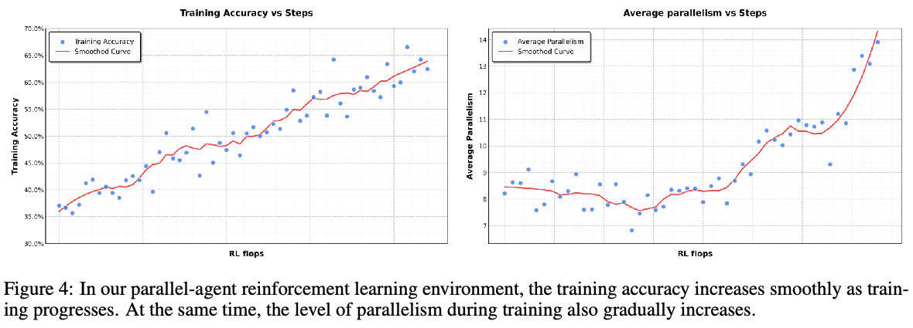
（接第 5 页）却没有有意义的任务分解。通过奖励已完成的子任务，\(r_{finish}\) 强制保证可行性，并引导策略进行有效的任务分解。
为确保最终策略优化的是主要目标，超参数 \(\lambda _{1}\) 和 \(\lambda _{2}\) 在训练过程中逐渐退火至零。
以关键步数作为资源约束。为衡量并行 agent 环境中的计算时间成本，我们类比计算图中的关键路径，定义关键步数。我们将一轮交互建模为按 \(t = 1, \ldots , T\) 编号的一系列执行阶段。在每个阶段，主 agent 执行一个动作，该动作对应于直接调用工具，或实例化一组并行运行的子 agent。令 \(S_main^{(t)}\) 表示主 agent 在阶段 \(t\) 所执行的步数（通常为 \(S_main^{(t)} = 1\)），\(S_sub,i^{(t)}\) 表示该并行组中第 \(i\) 个子 agent 所执行的步数。阶段 \(t\) 的持续时间取决于该组中运行时间最长的子 agent。因此，一轮交互的总关键步数定义为：
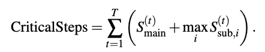
通过在训练和评测中约束关键步数，而非总步数，框架显式激励有效的并行化。如果过度创建子任务却不能减少并行组的最长执行时间，那么在这一指标下收益很小；而缩短最长并行分支的均衡任务分解，则能够直接减少关键步数。因此，编排器被鼓励以最小化端到端延迟的方式，在子 agent 之间分配工作，而非仅仅最大化并发程度或总工作量。
用于诱导并行 agent 能力的提示构建。为激励编排器利用并行化优势，我们构建了一组旨在挑战顺序 agent 执行极限的合成提示。这些提示侧重于广域搜索，即同时探索许多独立信息源，或深度搜索，即需要多个推理分支并延后汇总结果。我们还加入了受实际工作负载启发的任务，例如长上下文文档分析和大规模文件下载。按顺序执行时，这些任务难以在固定的推理步数与工具调用预算内完成。这些任务在设计上鼓励编排器并行分配子任务，使其能够以少于单个顺序 agent 所需的关键步数完成任务。需要强调的是，提示不会明确指示模型进行并行操作，而是塑造一种自然有利于并行分解和调度策略的任务分布。
4 方法概述
4.1 基础：Kimi K2 基座模型
Kimi K2.5 的基础是 Kimi K2 [53]，一个万亿参数的MoETransformer [59] 模型，使用 15 万亿个高质量文本 token 进行预训练。Kimi K2 使用 token 高效的 MuonClip 优化器 [30, 34]，并通过 QK-Clip 保证训练稳定性。模型总参数量为 1.04 万亿，激活参数量为 320 亿，（续见下一页）
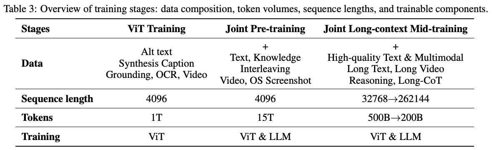
（接第 6 页）采用 384 个专家，每个 token 激活 8 个专家（稀疏度为 48）。MuonClip、架构设计和训练基础设施的详细描述请参见 Kimi K2 技术报告 [53]。
4.2 模型架构
Kimi K2.5 的多模态架构由三个组件构成：三维原生分辨率视觉编码器（MoonViT-3D）、MLP 投影器，以及 Kimi K2 MoE 语言模型，遵循 Kimi-VL [54] 中确立的设计原则。
MoonViT-3D：图像与视频共享 embedding 空间。在 Kimi-VL 中，我们使用 MoonViT 原生处理原始分辨率的图像，消除了复杂的子图像拆分和拼接操作。MoonViT 从 SigLIP-SO-400M [77] 初始化，结合了 NaViT [15] 的图像块打包策略：将单张图像划分为图像块，展平并按顺序连接成一维序列，从而能够对不同分辨率的图像同时进行高效训练。
为最大化图像理解能力向视频的迁移，我们引入 MoonViT-3D，采用统一架构、完全共享参数和一致的 embedding 空间。通过将“patch n’ pack”理念推广到时间维度，我们将最多四个连续帧视为一个时空体：将这些帧的二维图像块共同展平并打包成一个一维序列，使相同的 attention 机制能够无缝作用于空间和时间。额外的时间 attention 增强了对高速运动和视觉效果的理解，而共享机制最大化了知识从静态图像到动态视频的泛化，无需专门的视频模块或架构分支，就能取得强大的视频理解性能（见表 4）。在 MLP 投影器之前，轻量级时间池化将每个时间块内的图像块聚合，实现 4 倍时间压缩，显著延长可处理的视频长度。最终得到的是一条统一流水线：通过一个共享的参数空间和特征表征，将图像预训练获得的知识与能力整体迁移到视频。
4.3 预训练流水线
如表 3 所示，Kimi K2.5 的预训练基于 Kimi K2 语言模型 checkpoint，分三个阶段处理约 15T 个 token：首先，独立训练 ViT，建立稳健的原生分辨率视觉编码器；其次，联合预训练，同时增强语言和多模态能力；最后，在高质量数据上进行中期训练并激活长上下文，以精炼能力和扩展上下文窗口。
ViT 训练阶段。MoonViT-3D 从 SigLIP [77] 出发，在图像与文本对、视频与文本对上继续预训练，其中的文本部分包含多种目标：图像替代文本、图像和视频的合成描述、定位边界框，以及 OCR 文本。与 Kimi-VL [54] 中的实现不同，这一继续预训练过程不包含对比损失，仅使用交叉熵损失 \(L_{caption}\)，以输入图像和视频为条件生成描述。我们采用两阶段对齐策略。第一阶段，通过描述损失更新 MoonViT-3D，使其与 Moonlight-16B-A3B [34] 对齐，消耗约 1T 个 token，而训练 FLOPs 很少。这一阶段使 MoonViT-3D 初步理解高分辨率图像和视频。随后进行非常短的第二阶段，仅更新 MLP 投影器，将 ViT 与 1T LLM 连接，以使联合预训练更平滑。
联合训练阶段。联合预训练阶段从一个接近训练结束的 Kimi K2 checkpoint 继续，以 4K 序列长度额外训练 15T 个视觉与文本 token。数据配方在 Kimi K2 预训练分布的基础上进行了扩展：引入独有 token，调整数据比例并提高编程相关内容的权重，以及控制每个数据源的最大训练轮数。第三阶段结合更高质量的中期训练数据来激活长上下文，通过 YaRN [44] 插值逐步扩展上下文长度。这显著改善了长上下文文本理解和长视频理解的泛化。
4.4 后训练
4.4.1 SFT
沿用 Kimi K2 [53] 建立的 SFT 流水线，我们从 K2、K2 Thinking 和一组自有内部专家模型合成高质量候选回答，以开发 K2.5。我们的数据生成策略采用针对特定领域的专门流水线，将人工标注与先进提示工程及多阶段验证相结合。这一方法产生了大规模指令微调数据集，包含多样提示和复杂推理轨迹，最终训练模型在复杂的实际应用中优先采用交互式推理和精确工具调用。
4.4.2 强化学习
强化学习是后训练的关键阶段。为促进文本与视觉模态的联合优化，以及支持 Agent Swarm 的 PARL，我们开发了统一 agent 强化学习环境（附录 D），并优化了 RL 算法。文本与视觉联合 RL 和 PARL 都基于本节所述算法。
策略优化。对于从数据集 \(D\) 中采样的每个问题 \(x\)，使用上一策略 \(\pi _{old}\) 生成 \(K\) 个回答 \(\{y_{1}, \ldots , y_{K}\}\)。我们针对以下目标优化模型 \(\pi _\theta\)：
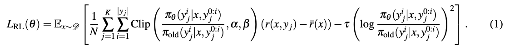
其中 \(\alpha , \beta , \tau > 0\) 为超参数，\(y_j^{0:i}\) 是第 \(j\) 个回答截至第 \(i\) 个 token 的前缀，\(N = \sum ^{K}_{i=1} |y_i|\) 是一个 batch 生成的 token 总数，\(\bar{r}(x) = (1/K) \sum ^{K}_{j=1} r(x, y_j)\) 是所有生成回答的平均奖励。
这一损失函数有别于 K1.5 [31] 中的策略优化算法，引入了 token 级裁剪机制，旨在缓解因训练与推理框架差异而放大的 off-policy 偏离。这一机制是一种简单的 gradient 掩码方案：对数比率在区间 \([\alpha , \beta ]\) 内的 token 正常计算策略 gradient，区间外 token 的 gradient 则置零。需要指出，与标准 PPO 裁剪 [50] 的关键区别在于，我们的方法严格依赖对数比率来显式限制 off-policy 漂移，而不考虑优势值的正负。这与近期提出的稳定大规模 RL 训练的策略 [74, 78] 一致。实验中，我们发现这一机制对于在需要长时程、多步骤工具使用推理的复杂领域维持训练稳定性至关重要。我们使用 MuonClip 优化器 [30, 34] 最小化该目标。
奖励函数。对于推理和 agent 等具有可验证解答的任务，我们采用基于规则的结果奖励。为优化资源消耗，我们还加入旨在提高 token 效率的预算控制奖励。对于通用任务，我们使用 GenRM（GRM），提供与 Kimi 内部价值标准一致的细粒度评价。此外，我们为视觉任务设计了任务专用奖励函数，以提供细粒度监督。对于视觉定位和点定位任务，我们采用基于 F1 的软匹配奖励：定位任务根据交并比（IoU）获得软匹配，点任务则根据最优匹配下的高斯加权距离获得软匹配。对于多边形分割任务，我们将预测多边形栅格化为二值掩码，并计算其相对于真实掩码的分割 IoU，以分配奖励。对于 OCR 任务，我们采用归一化编辑距离，量化预测与真实标注在字符层面的对齐程度。对于计数任务，奖励根据预测与真实值的绝对差分配。此外，我们合成复杂视觉谜题，并使用 LLM 验证器（Kimi K2）提供反馈。
GenRM。Kimi K2 为开放式生成使用基于自我批评评分准则的奖励 [53]，K2.5 则沿着这一方向，在广泛的（续见下一页）
（接第 8 页）agent 行为和多模态轨迹中系统部署 GenRM（GRM），扩展了这一研究方向。我们不将奖励建模局限于对话输出，而是在聊天助手、编程 agent、搜索 agent 和产物生成 agent 等多种环境中，将 GRM 应用于已验证的奖励信号之上。需要强调的是，GRM 并非二元裁决者，而是与 Kimi 价值观一致的细粒度评估器，关注对用户体验至关重要的维度，例如有用性、回答准备就绪程度、上下文相关性、恰当的细节程度、生成产物的审美质量，以及严格遵循指令。这一设计使奖励信号能够捕捉难以用纯规则或任务专用验证器编码的细微偏好 gradient。为缓解 reward hacking 和对单一偏好信号的过拟合，我们采用了多种针对不同任务情境设计的替代 GRM 评分准则。
Token 高效强化学习。Token 效率对于采用 test-time scaling 的 LLM 至关重要。虽然 test-time scaling 本质上是以计算量换取推理质量，但实际收益需要算法创新，主动处理这一权衡。我们之前的研究发现，施加依赖问题的预算可以有效约束推理时计算，激励模型生成更简洁的 CoT 推理模式，避免不必要的 token 扩张 [31, 53]。然而，我们也观察到长度过拟合现象：在严格预算约束下训练的模型往往无法泛化到更高计算规模。因此，它们不能有效利用额外的推理时 token 来解决复杂问题，而是默认采用被截短的推理模式。
为此，我们提出 Toggle，一种在推理时扩展与预算约束优化之间交替的训练启发式方法：在学习迭代 t，奖励函数定义为：
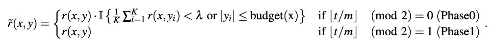
其中 \(\lambda\) 和 \(m\) 为算法超参数，\(K\) 为每个问题的 rollout 数量。具体而言，该算法每 \(m\) 次迭代在两个优化阶段之间切换：
- Phase0（预算受限阶段）：模型被训练为在依赖任务的 token 预算内解决问题。为避免过早牺牲质量来换取效率，这一约束有条件地应用：仅当模型在给定问题上的平均准确率超过阈值 \(\lambda\) 时才执行。
- Phase1（标准扩展阶段）：模型生成回答，最多达到 token 上限，鼓励模型利用计算量实现更好的推理时扩展。
依赖问题的预算根据正确回答子集中 token 长度的第 \(\rho\) 百分位数估计：
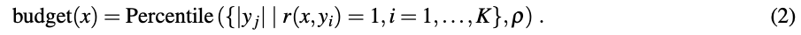
这一预算仅在训练开始时估计一次，随后保持固定。值得强调的是，Toggle 是针对双目标问题的随机交替优化方法，专门用于协调推理能力与计算效率。
我们在 K2 Thinking [1] 上评测 Toggle 的有效性。如图 5 所示，几乎所有基准上的输出长度都持续减少。平均而言，Toggle 将输出 token 减少 25∼30%，对性能的影响可以忽略。我们还观察到，CoT 中的冗余模式，例如重复验证和机械计算，显著减少。此外，Toggle 表现出很强的领域泛化。例如，即使仅在数学和编程任务上训练，模型在 GPQA 和 MMLU-Pro 上仍然能够持续减少 token，而性能仅有轻微下降（图 5）。
4.5 训练基础设施
Kimi K2.5 继承 Kimi K2 [53] 的训练基础设施，仅做了很少修改。对于多模态训练，我们提出解耦编码器进程，将视觉编码器整合进现有流水线，额外开销可以忽略。
4.5.1 解耦编码器进程（DEP）
在采用 PP 的典型多模态训练范式中，视觉编码器和文本 embedding 位于流水线的第一阶段（Stage-0）。但由于多模态输入大小（例如图像数量和分辨率）天然存在变化，Stage-0 的计算负载和内存用量会剧烈波动。这迫使现有方案为 VLM 采用定制 PP 配置，例如 [54] 手动调整 Stage-0 中的文本解码器层数，以预留内存。虽然这种（续见下一页）
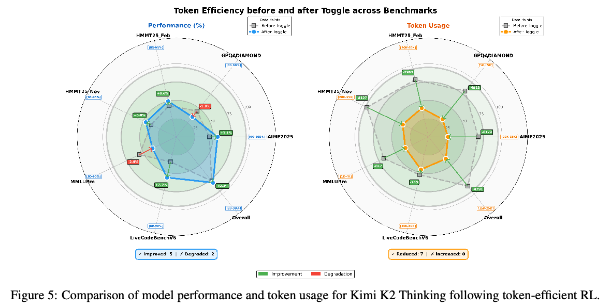
（接第 9 页）折中缓解了内存压力，却并未从根本上解决多模态输入大小导致的负载不均衡。更关键的是，它使我们无法直接复用已经针对纯文本训练高度优化的并行策略。
利用视觉编码器在计算图中独特的拓扑位置——即位于前向传播的起点和反向传播的终点——我们的训练采用解耦编码器进程（DEP），每个训练步骤包含三个阶段：
- 均衡视觉前向传播：首先对全局 batch 中的所有视觉数据执行前向传播。由于视觉编码器较小，无论采用何种其他并行策略，我们都将它复制到所有 GPU 上。在这一阶段，根据负载指标（例如图像或图像块数量）将前向计算工作均匀分配到所有 GPU，消除 PP 和视觉 token 数量导致的负载不均衡。为最小化峰值内存用量，我们丢弃所有中间激活，仅保留最终输出激活。结果汇集回 PP Stage-0；
- 骨干网络训练：这一阶段对主 Transformer 骨干执行前向和反向传播。由于上一阶段丢弃了中间激活，我们现在能够充分利用任何经过纯文本训练验证的高效并行策略。此阶段结束后，gradient 累积在视觉编码器输出处；
- 视觉重计算与反向传播：重新计算视觉编码器的前向传播，随后执行反向传播，计算视觉编码器参数的 gradient。
DEP 不仅实现负载均衡，还将视觉编码器与主骨干的优化策略解耦。K2.5 无缝继承 K2 的并行策略，多模态训练效率达到纯文本训练的 90%。我们注意到，同期研究 LongCat-Flash-Omni [55] 具有类似设计理念。
5 评测
5.1 主要结果
5.1.1 评测设置
基准。我们在综合基准集合上评测 Kimi K2.5，覆盖文本推理、竞赛编程与 agent 编程、多模态理解（图像和视频）、自主 agent 执行，以及计算机使用。基准分类按以下能力维度组织：
- 推理与通用能力：Humanity’s Last Exam（HLE）[46]、AIME 2025 [4]、HMMT 2025（Feb）[58]、IMO-AnswerBench [37]、GPQA-Diamond [47]、MMLU-Pro [64]、SimpleQA Verified [22]、AdvancedIF [23] 和 LongBench v2 [9]。
- 编程：SWE-Bench Verified [29]、SWE-Bench Pro（public）[16]、SWE-Bench Multilingual [29]、Terminal Bench 2.0 [39]、PaperBench（CodeDev）[52]、CyberGym [66]、SciCode [56]、OJBench（cpp）[65] 和 LiveCodeBench（v6）[28]。
- Agent 能力：BrowseComp [68]、WideSearch [69]、DeepSearchQA [60]、FinSearchComp（T2&T3）[26]、Seal-0 [45] 和 GDPVal [43]。
- 图像理解：（数学与推理）MMMU-Pro [75]、MMMU（val）[76]、CharXiv（RQ）[67]、MathVision [61] 和 MathVista（mini）[36]；（视觉知识）SimpleVQA [13] 和 WorldVQA2；（感知）ZeroBench（使用和不使用工具）[48]、BabyVision [12]、BLINK [18] 和 MMVP [57]；（OCR 与文档）OCRBench [35]、OmniDocBench 1.5 [42] 和 InfoVQA [38]。
- 视频理解：VideoMMMU [25]、MMVU [79]、MotionBench [24]、Video-MME [17]（带字幕）、LongVideoBench [70] 和 LVBench [62]。
- 计算机使用：OSWorld-Verified [72, 73] 和 WebArena [80]。
基线。我们与最先进的闭源和开源模型进行比较。闭源模型包括 Claude Opus 4.5（启用 extended thinking）[6]、GPT-5.2（使用 xhigh reasoning effort）[41] 和 Gemini 3 Pro（使用 high reasoning-level）[20]。开源模型方面，文本基准使用 DeepSeek-V3.2（启用 thinking mode）[14]，视觉基准则报告 Qwen3-VL-235B-A22B-Thinking [8] 的结果。
评测配置。除非另有说明，所有 Kimi K2.5 评测都使用 temperature = 1.0、top-p = 0.95 和 256k token 上下文长度。没有公开分数的基准在相同条件下重新评测，并以星号（*）标记。完整评测设置见附录 E。
5.1.2 评测结果
表 4 展示 Kimi K2.5 与闭源和开源基线的综合比较结果。以下重点介绍核心能力领域中的关键观察：
推理与通用能力。Kimi K2.5 在严格的 STEM 基准上，取得与顶尖闭源模型相竞争的表现。在数学任务 AIME 2025 上，K2.5 得分为 96.1%，接近 GPT-5.2 的满分，同时优于 Claude Opus 4.5（92.8%）和 Gemini 3 Pro（95.0%）。这种高水平表现也延续到 HMMT 2025（95.4%）和 IMO-AnswerBench（81.8%），展示 K2.5 出色的推理深度。Kimi K2.5 还展示了突出的知识和科学推理能力，在 SimpleQA Verified、MMLU-Pro 和 GPQA 上分别得到 36.9%、87.1% 和 87.6%。尤其在不使用工具的 HLE 中，K2.5 的 HLE-Full 得分为 30.1%，其中文本子集为 31.5%，图像子集为 21.3%。启用工具后，K2.5 的 HLE-Full 得分升至 50.2%，文本为 51.8%、图像为 39.8%，显著优于 Gemini 3 Pro（45.8%）和 GPT-5.2（45.5%）。除了推理和知识，K2.5 还展示了强大的指令遵循能力（AdvancedIF 为 75.6%），以及有竞争力的长上下文能力，在 LongBench v2 上得到 61.0%，与闭源和开源模型相比具有竞争力。
复杂编程与软件工程。Kimi K2.5 展示了强大的软件工程能力，尤其是在实际编程和维护任务上。它在 SWE-Bench Verified 上得到 76.8%，SWE-Bench Multilingual 上得到 73.0%，优于 Gemini 3 Pro，同时与 Claude Opus 4.5 和 GPT-5.2 保持竞争力。在 LiveCodeBench v6 上，Kimi K2.5 达到 85.0%，超过 DeepSeek-V3.2（83.3%）和 Claude Opus 4.5（82.2%），凸显了其在持续更新的实时编程挑战中的稳健性。在 TerminalBench 2.0、PaperBench 和 SciCode 上，得分分别为 50.8%、63.5% 和 48.7%，展示了其在跨领域自动化软件工程和问题求解中的稳定竞争水平。此外，在仅给出漏洞高层描述、寻找实际开源软件项目中先前发现的漏洞这一任务上，K2.5 在 CyberGym 得到 41.3 分，进一步体现了它在面向安全的软件分析中的有效性。
Agent 能力。Kimi K2.5 在复杂 agent 搜索和浏览任务上取得新的最先进水平。在 BrowseComp 上，K2.5 不使用上下文管理技术时达到 60.6%，使用 Discard-all 上下文管理 [14] 时达到 74.9%，显著优于 GPT-5.2 报告的 65.8%、Claude Opus 4.5（37.0%）和 Gemini 3 Pro（37.8%）。类似地，在 WideSearch 上，条目级 F1 达到 72.7%。在 DeepSearchQA（77.1%）、FinSearchComp T2&T3（67.8%）和 Seal-0（57.4%）上，K2.5 领先所有评测模型，展示了更强的 agent 深度研究、信息综合及多步骤工具编排能力。
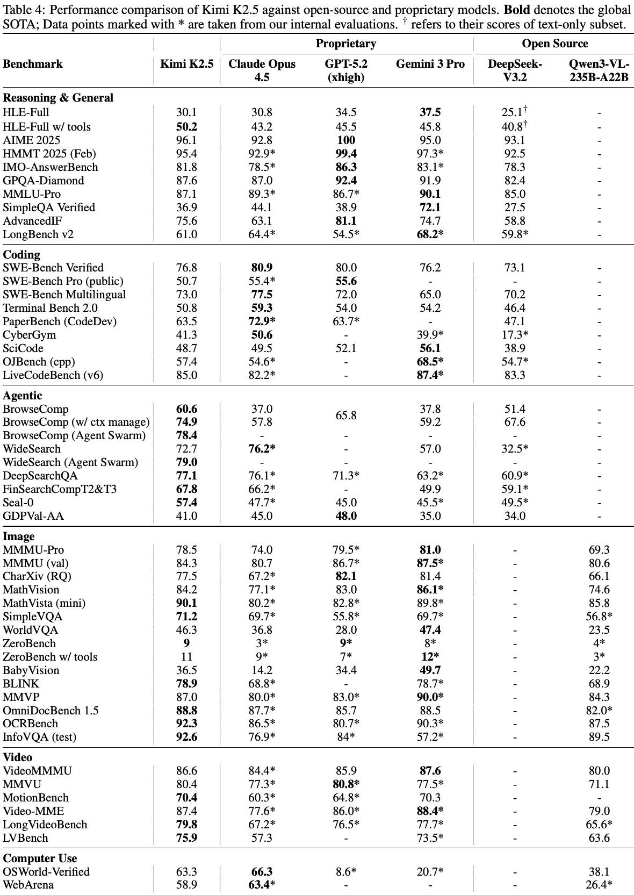
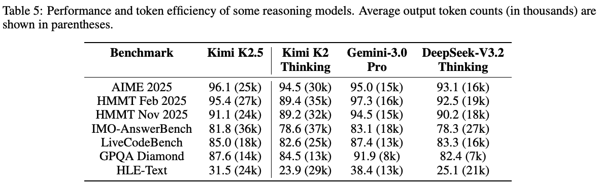
视觉推理、知识与感知。Kimi K2.5 展示了强大的视觉推理与世界知识能力，在涵盖跨学科多模态任务的 MMMU-Pro 上得到 78.5%。对于世界知识问答，K2.5 在 SimpleVQA 和 WorldVQA 上分别达到 71.2% 和 46.3%。在视觉推理方面，它在 MathVision、MathVista（mini）和 BabyVision 上分别达到 84.2%、90.1% 和 36.5%。对于 OCR 和文档理解，K2.5 取得出色结果：CharXiv（RQ）为 77.5%，OCRBench 为 92.3%，OmniDocBench 1.5 为 88.8%，InfoVQA（test）为 92.6%。在具有挑战性的 ZeroBench 上，Kimi K2.5 得到 9%，加入工具后达到 11%，显著领先竞争模型。在基础视觉感知基准 BLINK（78.9%）和 MMVP（87.0%）上，我们也观察到 Kimi K2.5 具有竞争力的表现，展示了它稳健的实际视觉感知能力。
视频理解。Kimi K2.5 在多种视频理解任务上达到最先进水平。在 VideoMMMU 和 MMVU 上分别达到 86.6% 和 80.4%，与前沿领先模型相竞争。借助 MoonViT-3D 的上下文压缩和密集时间理解能力，Kimi K2.5 在输入超过 2,000 帧的情况下，还在长视频理解任务上创造了新的全球最先进纪录：LVBench 为 75.9%，LongVideoBench 为 79.8%；同时在高维 MotionBench 上以 70.4% 展示出稳健的密集运动理解能力。
计算机使用能力。Kimi K2.5 在实际任务中展示了最先进的计算机使用能力。在 OSWorld-Verified [72, 73] 基准上，仅依靠 GUI 操作、不使用外部工具，就取得 63.3% 成功率。这显著优于 Qwen3-VL-235B-A22B（38.1%）等开源模型，以及 OpenAI 的计算机使用 agent 框架 Operator（基于 o3）（42.9%），同时与当前领先的 CUA 模型 Claude Opus 4.5（66.3%）保持竞争力。在基于 GUI 网页浏览的成熟基准 WebArena [80] 上，Kimi K2.5 取得 58.9% 成功率，超过 OpenAI Operator（58.1%），接近 Claude Opus 4.5（63.4%）。
5.2 Agent Swarm 结果
基准。为严格评测 Agent Swarm 框架的有效性，我们选择了三个具有代表性的基准，共同覆盖深度推理、大规模检索和实际复杂性：
- BrowseComp：一个具有挑战性的深度研究基准，需要多步骤推理和复杂信息综合。
- WideSearch：用于评测跨不同来源进行广泛、多步骤信息搜寻和推理能力的基准。
- In-house Swarm Bench：内部开发的 Swarm 基准，旨在评测 agent 群在实际高复杂度条件下的表现。它涵盖四个领域：WildSearch（在开放网络上进行不受约束的实际信息检索）、Batch Download（大规模获取多样资源）、WideRead（涉及超过 100 份输入文档的大规模文档理解）和 Long-Form Writing（连贯生成超过 100k 词的长篇内容）。该基准包含极大规模场景，对 agent 系统的编排、可扩展性和协调能力进行压力测试。
性能。表 6 展示 Kimi K2.5 Agent Swarm 与单 agent 配置及闭源基线的性能比较。结果表明，多 agent 编排带来显著性能提升。在 BrowseComp 上，Agent Swarm 达到 78.4%，相比单 agent K2.5（续见下一页）
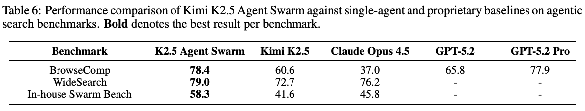
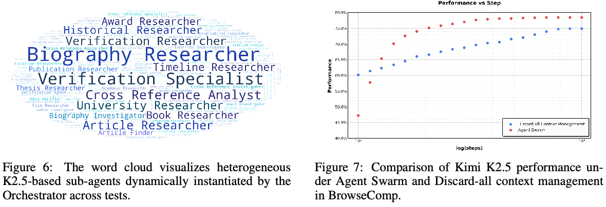
（接第 13 页）（60.6%）绝对提升了 17.8 个百分点，甚至超过 GPT-5.2 Pro（77.9%）。类似地，WideSearch 的 Item-F1 提升了 6.3 个百分点（72.7% → 79.0%），使 K2.5 Agent Swarm 超过 Claude Opus 4.5（76.2%），并创下新的最先进水平。提升在 In-house Swarm Bench 上最为显著（16.7 个百分点），其中的任务专门设计为奖励并行分解。这些跨基准的一致提升，验证了 Agent Swarm 能够有效地将计算并行性转化为实质能力增益，尤其适用于需要广泛探索、多来源验证或同时处理独立子任务的问题。
通过并行节省执行时间。除提升任务性能外，Agent Swarm 还通过并行子 agent 执行，显著减少实际耗时。在 WideSearch 基准上，相比单 agent 基线，它将达到目标性能所需的执行时间缩短了 3∼4.5 倍。如图 8 所示，这种效率收益随任务复杂度增加而扩大：当目标 Item-F1 从 30% 提高至 70% 时，单 agent 的执行时间从约基准的 1.8 倍增至超过 7.0 倍，而 Agent Swarm 保持近乎恒定的低延迟，范围为 0.6∼1.6 倍。这些结果表明，Agent Swarm 能够有效地将顺序工具调用转化为并行操作，避免任务难度增加时通常出现的完成时间线性增长。
动态创建与调度子 agent。在 agent 群中，子 agent 是动态实例化的，而非预先定义。通过 PARL，编排器学习自适应策略，响应不断演变的任务结构和问题状态，创建并调度自托管的子 agent。与静态分解方法不同，这种学习得到的策略使编排器能够根据查询，推理所需子 agent 的数量、创建时机及专业方向。因此，异构 agent 群从这种自适应分配策略中自然形成（图 6）。
Agent Swarm 作为主动上下文管理。除提高性能和加速运行外，agent 群也是由多 agent 架构实现的一种主动、智能的上下文管理方式 [5]。这一方法有别于 Hide-Tool-Result [2]、Summary [71] 或 Discard-all [14] 等测试时上下文截断策略，后者在上下文溢出时，通过压缩或丢弃累积历史作出反应。虽然这些方法能有效减少 token 使用，但它们本质上是被动的，往往会牺牲结构信息或中间推理。
相比之下，Agent Swarm 通过显式编排实现主动上下文控制。长时程任务被分解为并行、语义隔离的子任务，每个子任务都由一个专用子 agent 在受限的局部上下文中执行。关键在于，这些子 agent 保留独立的工作记忆并开展局部推理，不直接改变或污染中央编排器的全局上下文。只有与任务相关的输出，而非完整交互轨迹，会被选择性地传回编排器。这一设计实现的是上下文分片，（续见下一页）
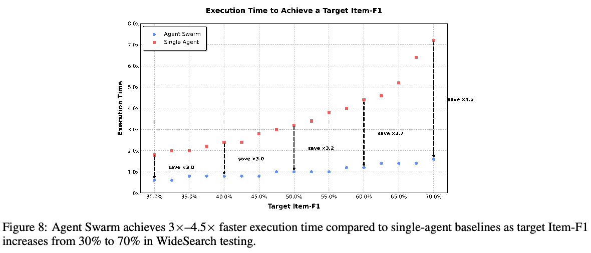
（接第 14 页）而非上下文截断，使系统能够沿额外的架构维度扩展有效上下文长度，同时保留模块化、信息局部性和推理完整性。
如图 7 所示，这种主动策略在 BrowseComp 的效率和准确率上都优于 Discard-all。通过在编排器层面保持任务级连贯性，同时严格限制子 agent 上下文，Agent Swarm 实现了具有选择性上下文保留的并行执行，仅保留高层协调信号或必要的中间结果。因此，Agent Swarm 成为一种主动、结构化的上下文管理器，与统一上下文截断相比，用显著更少的关键步数取得更高准确率。
6 结论
Kimi K2.5 表明，通过文本与视觉的联合优化以及并行 agent 执行，可以实现可扩展的通用 agent 智能。通过在预训练和强化学习中统一语言与视觉，模型实现了强大的跨模态对齐以及视觉与文本推理。Agent Swarm 支持异构子任务并发执行，在降低推理延迟的同时，提升复杂 agent 工作负载上的性能。以视觉与文本智能和 agent 群为基础，Kimi K2.5 在基准及实际任务中展示出强大表现。通过开源后训练 checkpoint，我们希望支持开源社区构建可扩展的通用 agent 系统，并加速迈向通用 agent 智能的进程。
参考文献
[1] 介绍 Kimi K2 Thinking
[1] Moonshot AI. Introducing Kimi K2 Thinking. 2025. URL: https://moonshotai.github.io/Kimi- K2/thinking.html. https://moonshotai.github.io/Kimi-K2/thinking.html
[2] Kimi-Researcher：用于涌现 agent 能力的端到端 RL 训练
[2] Moonshot AI. Kimi-Researcher End-to-End RL Training for Emerging Agentic Capabilities. 2025. URL: https://moonshotai.github.io/Kimi-Researcher/.
[3] Amazon Simple Storage Service（Amazon S3）
[3] Amazon Web Services. Amazon Simple Storage Service (Amazon S3). Web. Available at: https://aws. amazon.com/s3/. 2023. URL: https://aws.amazon.com/s3/ (visited on 12/15/2023).
[4] 2025 年美国数学邀请赛 I
[4] Mathematical Association of America. 2025 American Invitational Mathematics Examination I. Held on Febru- ary 6, 2025. 2025. URL: https://artofproblemsolving.com/wiki/index.php/2025_AIME_ I. https://artofproblemsolving.com/wiki/index.php/2025_AIME_I
[5] 构建多 agent 系统：何时以及如何使用
[5] Anthropic. Building multi-agent systems: when and how to use them. 2026. URL: https://claude.com/ blog/building-multi-agent-systems-when-and-how-to-use-them. https://claude.com/blog/building-multi-agent-systems-when-and-how-to-use-them
[6] Claude Opus 4.5 系统卡
[6] Anthropic. Claude Opus 4.5 System Card. 2025. URL: https : / / www - cdn . anthropic . com / bf10f64990cfda0ba858290be7b8cc6317685f47.pdf. https://www-cdn.anthropic.com/bf10f64990cfda0ba858290be7b8cc6317685f47.pdf
[7] 我们如何构建多 agent 研究系统
[7] Anthropic. How we built our multi-agent research system. 2025. URL: https://www.anthropic.com/ engineering/multi-agent-research-system. https://www.anthropic.com/engineering/multi-agent-research-system
[8] Qwen3-VL 技术报告
[8] Shuai Bai et al. Qwen3-VL Technical Report. 2025. arXiv: 2511 . 21631 [cs.CV]. URL: https : / / arxiv.org/abs/2511.21631. https://arxiv.org/abs/2511.21631
[9] LongBench v2：迈向对实际长上下文多任务的更深理解与推理
[9] Yushi Bai et al. LongBench v2: Towards Deeper Understanding and Reasoning on Realistic Long-context Mul- titasks. 2025. arXiv: 2412.15204 [cs.CL]. URL: https://arxiv.org/abs/2412.15204.
[10] OpenAI Gym
[10] Greg Brockman et al. OpenAI Gym. 2016. arXiv: 1606.01540 [cs.LG]. URL: https://arxiv.org/ abs/1606.01540. https://arxiv.org/abs/1606.01540
[11] 语言模型是少样本学习器
[11] Tom B. Brown et al. Language Models are Few-Shot Learners. 2020. arXiv: 2005.14165 [cs.CL]. URL: https://arxiv.org/abs/2005.14165.
[12] BabyVision：超越语言的视觉推理
[12] Liang Chen et al. BabyVision: Visual Reasoning Beyond Language. 2026. arXiv: 2601.06521 [cs.CV]. URL: https://arxiv.org/abs/2601.06521.
[13] SimpleVQA：多模态 LLM 的多模态事实性评测
[13] Xianfu Cheng et al. SimpleVQA: Multimodal Factuality Evaluation for Multimodal Large Language Models. 2025. arXiv: 2502.13059 [cs.CL]. URL: https://arxiv.org/abs/2502.13059.
[14] DeepSeek-V3.2：推进开放 LLM 的前沿
[14] DeepSeek-AI et al. DeepSeek-V3.2: Pushing the Frontier of Open Large Language Models. 2025. arXiv: 2512. 02556 [cs.CL]. URL: https://arxiv.org/abs/2512.02556.
[15] Patch n’ Pack：NaViT，一种适用于任意宽高比与分辨率的视觉 Transformer
[15] Mostafa Dehghani et al. Patch n’ Pack: NaViT, a Vision Transformer for any Aspect Ratio and Resolution. 2023. arXiv: 2307.06304 [cs.CV]. URL: https://arxiv.org/abs/2307.06304.
[16] SWE-Bench Pro：AI agent 能否解决长时程软件工程任务？
[16] Xiang Deng et al. “SWE-Bench Pro: Can AI Agents Solve Long-Horizon Software Engineering Tasks?” In: arXiv preprint arXiv:2509.16941 (2025).
[17] Video-MME：首个面向多模态 LLM 视频分析的综合评测基准
[17] Chaoyou Fu et al. Video-MME: The First-Ever Comprehensive Evaluation Benchmark of Multi-modal LLMs in Video Analysis. 2025. arXiv: 2405.21075 [cs.CV]. URL: https://arxiv.org/abs/2405.21075.
[18] BLINK：多模态 LLM 能够看见，却不能感知
[18] Xingyu Fu et al. BLINK: Multimodal Large Language Models Can See but Not Perceive. 2024. arXiv: 2404. 12390 [cs.CV]. URL: https://arxiv.org/abs/2404.12390.
[19] Datacomp：寻找下一代多模态数据集
[19] Samir Yitzhak Gadre et al. “Datacomp: In search of the next generation of multimodal datasets”. In: Advances in Neural Information Processing Systems 36 (2024).
[20] Gemini 3 Pro
[20] Google. Gemini 3 Pro. 2025. URL: https://deepmind.google/models/gemini/pro/.
[21] Seed1.5-VL 技术报告
[21] Dong Guo et al. Seed1.5-VL Technical Report. 2025. arXiv: 2505 . 07062 [cs.CV]. URL: https : / / arxiv.org/abs/2505.07062. https://arxiv.org/abs/2505.07062
[22] SimpleQA Verified：衡量参数化知识的可靠事实性基准
[22] Lukas Haas et al. SimpleQA Verified: A Reliable Factuality Benchmark to Measure Parametric Knowledge. 2025. arXiv: 2509.07968 [cs.CL]. URL: https://arxiv.org/abs/2509.07968.
[23] AdvancedIF：基于评分准则的基准评测与强化学习，推动 LLM 指令遵循
[23] Yun He et al. AdvancedIF: Rubric-Based Benchmarking and Reinforcement Learning for Advancing LLM In- struction Following. 2025. arXiv: 2511.10507 [cs.CL]. URL: https://arxiv.org/abs/2511. 10507. https://arxiv.org/abs/2511.10507
[24] MotionBench：VLM 细粒度视频运动理解的评测与改进
[24] Wenyi Hong et al. MotionBench: Benchmarking and Improving Fine-grained Video Motion Understanding for Vision Language Models. 2025. arXiv: 2501 . 02955 [cs.CV]. URL: https : / / arxiv . org / abs / 2501.02955. https://arxiv.org/abs/2501.02955
[25] Video-MMMU：评测从多学科专业视频中获取知识的能力
[25] Kairui Hu et al. Video-MMMU: Evaluating Knowledge Acquisition from Multi-Discipline Professional Videos. 2025. arXiv: 2501.13826 [cs.CV]. URL: https://arxiv.org/abs/2501.13826.
参考文献（续）
[26] FinSearchComp：迈向实际、专家级的金融搜索与推理评测
[26] Liang Hu et al. FinSearchComp: Towards a Realistic, Expert-Level Evaluation of Financial Search and Rea- soning. 2025. arXiv: 2509.13160 [cs.CL]. URL: https://arxiv.org/abs/2509.13160.
[27] GPipe：使用 PP 高效训练巨型神经网络
[27] Yanping Huang et al. GPipe: Efficient Training of Giant Neural Networks using Pipeline Parallelism. 2019. arXiv: 1811.06965 [cs.CV]. URL: https://arxiv.org/abs/1811.06965.
[28] Livecodebench：LLM 代码能力的全面、无污染评测
[28] Naman Jain et al. “Livecodebench: Holistic and contamination free evaluation of large language models for code”. In: arXiv preprint arXiv:2403.07974 (2024).
[29] Swe-bench：语言模型能否解决实际 GitHub issue？
[29] Carlos E Jimenez et al. “Swe-bench: Can language models resolve real-world github issues?” In: arXiv preprint arXiv:2310.06770 (2023).
[30] Muon：用于神经网络隐藏层的优化器
[30] Keller Jordan et al. Muon: An optimizer for hidden layers in neural networks. 2024. URL: https : / / kellerjordan.github.io/posts/muon/. https://kellerjordan.github.io/posts/muon/
[31] Kimi k1.5：通过 LLM 扩展强化学习
[31] Kimi Team. “Kimi k1. 5: Scaling reinforcement learning with llms”. In: arXiv preprint arXiv:2501.12599 (2025).
[32] Obelics：开放的网络规模、经过过滤的图文交错文档数据集
[32] Hugo Laurençon et al. “Obelics: An open web-scale filtered dataset of interleaved image-text documents”. In: Advances in Neural Information Processing Systems 36 (2024).
[33] Gshard：通过条件计算和自动分片扩展巨型模型
[33] Dmitry Lepikhin et al. “Gshard: Scaling giant models with conditional computation and automatic sharding”. In: arXiv preprint arXiv:2006.16668 (2020).
[34] Muon 可扩展用于 LLM 训练
[34] Jingyuan Liu et al. “Muon is Scalable for LLM Training”. In: arXiv preprint arXiv:2502.16982 (2025).
[35] OCRBench：大型多模态模型中 OCR 的隐藏奥秘
[35] Yuliang Liu et al. “OCRBench: on the hidden mystery of OCR in large multimodal models”. In: Science China Information Sciences 67.12 (Dec. 2024). ISSN: 1869-1919. DOI: 10.1007/s11432-024-4235-6. URL: http://dx.doi.org/10.1007/s11432-024-4235-6. https://doi.org/10.1007/s11432-024-4235-6
[36] MathVista：评测基础模型在视觉上下文中的数学推理
[36] Pan Lu et al. MathVista: Evaluating Mathematical Reasoning of Foundation Models in Visual Contexts. 2024. arXiv: 2310.02255 [cs.CV]. URL: https://arxiv.org/abs/2310.02255.
[37] 迈向稳健的数学推理
[37] Thang Luong et al. “Towards Robust Mathematical Reasoning”. In: Proceedings of the 2025 Conference on Empirical Methods in Natural Language Processing. Ed. by Christos Christodoulopoulos et al. Suzhou, China: Association for Computational Linguistics, Nov. 2025, pp. 35418–35442. ISBN: 979-8-89176-332-6. DOI: 10. 18653 / v1 / 2025 . emnlp - main . 1794. URL: https : / / aclanthology . org / 2025 . emnlp - main.1794/. https://aclanthology.org/2025.emnlp-main.1794/ https://doi.org/10.18653/v1/2025.emnlp-main.1794
[38] InfographicVQA
[38] Minesh Mathew et al. InfographicVQA. 2021. arXiv: 2104.12756 [cs.CV]. URL: https://arxiv. org/abs/2104.12756. https://arxiv.org/abs/2104.12756
[39] Terminal-Bench：在命令行界面的困难、实际任务上评测 agent
[39] Mike A Merrill et al. “Terminal-Bench: Benchmarking Agents on Hard, Realistic Tasks in Command Line Interfaces”. In: arXiv preprint arXiv:2601.11868 (2026).
[40] 使用 Megatron-LM 在 GPU 集群上高效训练大规模语言模型
[40] Deepak Narayanan et al. Efficient Large-Scale Language Model Training on GPU Clusters Using Megatron- LM. 2021. arXiv: 2104.04473 [cs.CL]. URL: https://arxiv.org/abs/2104.04473.
[41] 介绍 GPT 5.2
[41] OpenAI. Introducing GPT 5.2. 2025. URL: https://openai.com/index/introducing- gpt- 5- 2/. https://openai.com/index/introducing-gpt-5-2/
[42] OmniDocBench：通过全面标注评测多样 PDF 文档解析
[42] Linke Ouyang et al. OmniDocBench: Benchmarking Diverse PDF Document Parsing with Comprehensive An- notations. 2025. arXiv: 2412.07626 [cs.CV]. URL: https://arxiv.org/abs/2412.07626.
[43] GDPval：评测 AI 模型在具有实际经济价值的任务上的表现
[43] Tejal Patwardhan et al. GDPval: Evaluating AI Model Performance on Real-World Economically Valuable Tasks. 2025. arXiv: 2510.04374 [cs.LG]. URL: https://arxiv.org/abs/2510.04374.
[44] Yarn：高效扩展 LLM 的上下文窗口
[44] Bowen Peng et al. “Yarn: Efficient context window extension of large language models”. In: arXiv preprint arXiv:2309.00071 (2023).
[45] SealQA：提高搜索增强语言模型的推理标准
[45] Thinh Pham et al. SealQA: Raising the Bar for Reasoning in Search-Augmented Language Models. Seal-0 is the main subset of this benchmark. 2025. arXiv: 2506.01062 [cs.CL]. URL: https://arxiv.org/ abs/2506.01062. https://arxiv.org/abs/2506.01062 Seal-0 是该基准的主要子集。
[46] Humanity’s Last Exam
[46] Long Phan et al. Humanity’s Last Exam. 2025. arXiv: 2501.14249 [cs.LG]. URL: https://arxiv. org/abs/2501.14249. https://arxiv.org/abs/2501.14249
[47] Gpqa：研究生水平、无法靠 Google 搜索解决的问答基准
[47] David Rein et al. “Gpqa: A graduate-level google-proof q&a benchmark”. In: First Conference on Language Modeling. 2024.
[48] ZeroBench：当代大型多模态模型无法完成的视觉基准
[48] Jonathan Roberts et al. ZeroBench: An Impossible Visual Benchmark for Contemporary Large Multimodal Mod- els. 2025. arXiv: 2502.09696 [cs.CV]. URL: https://arxiv.org/abs/2502.09696.
[49] Laion-5b：用于训练下一代图文模型的开放大规模数据集
[49] Christoph Schuhmann et al. “Laion-5b: An open large-scale dataset for training next generation image-text models”. In: Advances in Neural Information Processing Systems 35 (2022), pp. 25278–25294.
[50] PPO 算法
[50] John Schulman et al. “Proximal Policy Optimization Algorithms”. In: arXiv preprint arXiv:1707.06347 (2017). URL: https://arxiv.org/abs/1707.06347.
参考文献（续）
[51] 通过简单点预测实现像素级 VLM 感知
[51] Tianhui Song et al. Towards Pixel-Level VLM Perception via Simple Points Prediction. 2026. arXiv: 2601. 19228 [cs.CV]. URL: https://arxiv.org/abs/2601.19228.
[52] PaperBench：评测 AI 复现 AI 研究的能力
[52] Giulio Starace et al. “PaperBench: Evaluating AI’s Ability to Replicate AI Research”. In: arXiv preprint arXiv:2504.01848 (2025).
[53] Kimi k2：开放的 agent 智能
[53] Kimi Team et al. “Kimi k2: Open agentic intelligence”. In: arXiv preprint arXiv:2507.20534 (2025).
[54] Kimi-vl 技术报告
[54] Kimi Team et al. “Kimi-vl technical report”. In: arXiv preprint arXiv:2504.07491 (2025).
[55] Longcat-flash-omni 技术报告
[55] Meituan LongCat Team et al. “Longcat-flash-omni technical report”. In: arXiv preprint arXiv:2511.00279 (2025).
[56] Scicode：由科学家整理的科研编程基准
[56] Minyang Tian et al. “Scicode: A research coding benchmark curated by scientists”. In: Advances in Neural Information Processing Systems 37 (2024), pp. 30624–30650.
[57] 视而不见？探索多模态 LLM 的视觉短板
[57] Shengbang Tong et al. Eyes Wide Shut? Exploring the Visual Shortcomings of Multimodal LLMs. 2024. arXiv: 2401.06209 [cs.CV]. URL: https://arxiv.org/abs/2401.06209.
[58] 2025 年 2 月 Harvard-MIT 数学竞赛
[58] Harvard-MIT Mathematics Tournament. Harvard-MIT Mathematics Tournament, February 2025. Held on February 15, 2025. 2025. URL: https://www.hmmt.org/www/archive/282.
[59] attention 就是你所需要的一切
[59] Ashish Vaswani et al. “Attention is All you Need”. In: Advances in Neural Information Processing Systems. Ed. by I. Guyon et al. Vol. 30. Curran Associates, Inc., 2017. URL: https://proceedings.neurips. cc/paper_files/paper/2017/file/3f5ee243547dee91fbd053c1c4a845aa-Paper.pdf. https://proceedings.neurips.cc/paper_files/paper/2017/file/3f5ee243547dee91fbd053c1c4a845aa-Paper.pdf
[60] DeepSearchQA：弥合深度研究 agent 的全面性差距
[60] Nikhita Vedula et al. DeepSearchQA: Bridging the Comprehensiveness Gap for Deep Research Agents. 2025. URL: https : / / storage . googleapis . com / deepmind - media / DeepSearchQA / DeepSearchQA_benchmark_paper.pdf. https://storage.googleapis.com/deepmind-media/DeepSearchQA/DeepSearchQA_benchmark_paper.pdf
[61] 使用 MATH-Vision 数据集衡量多模态数学推理
[61] Ke Wang et al. Measuring Multimodal Mathematical Reasoning with MATH-Vision Dataset. 2024. arXiv: 2402.14804 [cs.CV]. URL: https://arxiv.org/abs/2402.14804.
[62] LVBench：极长视频理解基准
[62] Weihan Wang et al. LVBench: An Extreme Long Video Understanding Benchmark. 2025. arXiv: 2406.08035 [cs.CV]. URL: https://arxiv.org/abs/2406.08035.
[63] OpenCUA：计算机使用 agent 的开放基础
[63] Xinyuan Wang et al. OpenCUA: Open Foundations for Computer-Use Agents. 2025. arXiv: 2508 . 09123 [cs.AI]. URL: https://arxiv.org/abs/2508.09123.
[64] MMLU-Pro：更稳健、更具挑战性的多任务语言理解基准
[64] Yubo Wang et al. MMLU-Pro: A More Robust and Challenging Multi-Task Language Understanding Bench- mark. 2024. arXiv: 2406.01574 [cs.CL]. URL: https://arxiv.org/abs/2406.01574.
[65] OJBench：LLM 的竞赛级代码基准
[65] Zhexu Wang et al. “OJBench: A Competition Level Code Benchmark For Large Language Models”. In: arXiv preprint arXiv:2506.16395 (2025).
[66] CyberGym：利用大规模实际漏洞评测 AI agent 的网络安全能力
[66] Zhun Wang et al. “CyberGym: Evaluating AI Agents’ Cybersecurity Capabilities with Real-World Vulnerabili- ties at Scale”. In: arXiv preprint arXiv:2506.02548 (2025).
[67] CharXiv：揭示多模态 LLM 在实际图表理解中的差距
[67] Zirui Wang et al. CharXiv: Charting Gaps in Realistic Chart Understanding in Multimodal LLMs. 2024. arXiv: 2406.18521 [cs.CL]. URL: https://arxiv.org/abs/2406.18521.
[68] BrowseComp：面向浏览 agent 的简单但具有挑战性的基准
[68] Jason Wei et al. BrowseComp: A Simple Yet Challenging Benchmark for Browsing Agents. 2025. arXiv: 2504. 12516 [cs.CL]. URL: https://arxiv.org/abs/2504.12516.
[69] WideSearch：agent 广域信息搜寻基准
[69] Ryan Wong et al. WideSearch: Benchmarking Agentic Broad Info-Seeking. 2025. arXiv: 2508 . 07999 [cs.CL]. URL: https://arxiv.org/abs/2508.07999.
[70] LongVideoBench：长上下文交错视频与语言理解基准
[70] Haoning Wu et al. LongVideoBench: A Benchmark for Long-context Interleaved Video-Language Understand- ing. 2024. arXiv: 2407.15754 [cs.CV]. URL: https://arxiv.org/abs/2407.15754.
[71] ReSum：通过上下文摘要释放长时程搜索智能
[71] Xixi Wu et al. ReSum: Unlocking Long-Horizon Search Intelligence via Context Summarization. 2025. arXiv: 2509.13313 [cs.CL]. URL: https://arxiv.org/abs/2509.13313.
[72] 介绍 OSWorld-Verified
[72] Tianbao Xie et al. “Introducing OSWorld-Verified”. In: xlang.ai (July 2025). URL: https://xlang.ai/ blog/osworld-verified. https://xlang.ai/blog/osworld-verified
[73] OSWorld：在真实计算机环境中的开放式任务上评测多模态 agent
[73] Tianbao Xie et al. OSWorld: Benchmarking Multimodal Agents for Open-Ended Tasks in Real Computer Envi- ronments. 2024. arXiv: 2404.07972 [cs.AI]. https://arxiv.org/abs/2404.07972
[74] 你的高效 RL 框架悄悄带来了 off-policy RL 训练
[74] Feng Yao et al. Your Efficient RL Framework Secretly Brings You Off-Policy RL Training. Aug. 2025. URL: https://fengyao.notion.site/off-policy-rl.
[75] MMMU-Pro：更稳健的多学科多模态理解基准
[75] Xiang Yue et al. MMMU-Pro: A More Robust Multi-discipline Multimodal Understanding Benchmark. 2025. arXiv: 2409.02813 [cs.CL]. URL: https://arxiv.org/abs/2409.02813.
[76] MMMU：面向专家级 AGI 的大规模多学科多模态理解与推理基准
[76] Xiang Yue et al. “MMMU: A Massive Multi-discipline Multimodal Understanding and Reasoning Benchmark for Expert AGI”. In: Proceedings of CVPR. 2024.
[77] 语言与图像预训练的 Sigmoid 损失
[77] Xiaohua Zhai et al. Sigmoid Loss for Language Image Pre-Training. 2023. arXiv: 2303.15343 [cs.CV]. URL: https://arxiv.org/abs/2303.15343.
参考文献（续）
[78] 小漏可沉大船——用 IcePop 提升 MoE 的 RL 训练！
[78] Xin Zhao et al. Small Leak Can Sink a Great Ship–Boost RL Training on MoE with IcePop! Sept. 2025. URL: https://ringtech.notion.site/icepop.
[79] MMVU：衡量专家级多学科视频理解
[79] Yilun Zhao et al. MMVU: Measuring Expert-Level Multi-Discipline Video Understanding. 2025. arXiv: 2501. 12380 [cs.CV]. URL: https://arxiv.org/abs/2501.12380.
[80] WebArena：用于构建自主 agent 的真实网络环境
[80] Shuyan Zhou et al. “WebArena: A Realistic Web Environment for Building Autonomous Agents”. In: arXiv preprint arXiv:2307.13854 (2023). URL: https://webarena.dev.
[81] Multimodal c4：开放的十亿级图像与文本交错语料库
[81] Wanrong Zhu et al. “Multimodal c4: An open, billion-scale corpus of images interleaved with text”. In: Ad- vances in Neural Information Processing Systems 36 (2024).
A 贡献者
作者按姓氏字母顺序排列。
| Tongtong Bai | Xiaochen Gong | Jiawei Lin | Xiaoxi Song |
| Yifan Bai | Zhuoma Gongque | Xiaohan Lin | Hongjin Su |
| Yiping Bao | Qizheng Gu | Yibo Lin | Jianlin Su |
| S.H. Cai | Xinran Gu | Zhishan Lin | Zhaochen Su |
| Yuan Cao | Yicheng Gu | Zichao Lin | Lin Sui |
| Ziwei Chai | Longyu Guan | Cheng Liu | Jinsong Sun |
| Y. Charles | Shuhao Guan | Chenyu Liu | Junyao Sun |
| H.S. Che | Yuanying Guo | Hongzhang Liu | Tongyu Sun |
| Cheng Chen | Xiaoru Hao | Liang Liu | Flood Sung |
| Guanduo Chen | Dailan He | Shaowei Liu | Yunpeng Tai |
| Huarong Chen | Tianhong He | Shudong Liu | Chuning Tang |
| Jia Chen | Weiran He | Shuran Liu | Heyi Tang |
| Jianlong Chen | Wenyang He | Tianwei Liu | Xiaojuan Tang |
| Jun Chen | Yibo He | Tianyu Liu | Zhengyang Tang |
| Kefan Chen | Yunjia He | Weizhou Liu | Jiawen Tao |
| Liang Chen | Chao Hong | Xiangyan Liu | Shiyuan Teng |
| Ruijue Chen | Hao Hu | Yangyang Liu | Chaoran Tian |
| Xinhao Chen | Jiaxi Hu | Yanming Liu | Pengfei Tian |
| Yanru Chen | Yangyang Hu | Yibo Liu | Bowen Wang |
| Yanxu Chen | Zhenxing Hu | Yuanxin Liu | Chensi Wang |
| Yicun Chen | Ke Huang | Zhengying Liu | Chuang Wang |
| Yimin Chen | Ruiyuan Huang | Zhongnuo Liu | Congcong Wang |
| Yingjiang Chen | Weixiao Huang | Enzhe Lu | Dingkun Wang |
| Yuankun Chen | Zhiqi Huang | Haoyu Lu | Dinglu Wang |
| Yujie Chen | Chaobo Jia | Zhiyuan Lu | Dongliang Wang |
| Yutian Chen | Tao Jiang | G. Luo | Feng Wang |
| Zhirong Chen | Zhejun Jiang | Junyu Luo | Hailong Wang |
| Ziwei Chen | Xinyi Jin | Tongxu Luo | Haiming Wang |
| Dazhi Cheng | Yu Jing | Yashuo Luo | Hao Wang |
| Yean Cheng | Guokun Lai | Long Ma | Hengzhi Wang |
| Minghan Chu | Aidi Li | Shaoguang Mao | Huaqing Wang |
| Jialei Cui | C. Li | Yuan Mei | Hui Wang |
| Jiaqi Deng | Cheng Li | Xin Men | Jiahao Wang |
| Muxi Diao | Fang Li | Fanqing Meng | Jinhong Wang |
| Hao Ding | Guanghe Li | Zhiyong Meng | Jiuzheng Wang |
| Mengfan Dong | Guanyu Li | Yibo Miao | Kaixin Wang |
| Mengnan Dong | Haitao Li | Minqing Ni | Linian Wang |
| Yuxin Dong | Haoyang Li | Kun Ouyang | Qibin Wang |
| Yuhao Dong | Jia Li | Siyuan Pan | Shengjie Wang |
| Ang’ang Du | Jingwei Li | Bo Pang | Shuyi Wang |
| Chenzhuang Du | Junxiong Li | Yuchao Qian | Si Wang |
| Dikang Du | Lincan Li | Ruoyu Qin | Wei Wang |
| Lingxiao Du | Mo Li | Zeyu Qin | Xiaochen Wang |
| Yulun Du | Weihong Li | Jiezhong Qiu | Xinyuan Wang |
| Yu Fan | Wentao Li | Bowen Qu | Yao Wang |
| Shengjun Fang | Xinhang Li | Zeyu Shang | Yejie Wang |
| Qiulin Feng | Xinhao Li | Youbo Shao | Yipu Wang |
| Yichen Feng | Yang Li | Tianxiao Shen | Yiqin Wang |
| Garimugai Fu | Yanhao Li | Zhennan Shen | Yucheng Wang |
| Kelin Fu | Yiwei Li | Juanfeng Shi | Yuzhi Wang |
| Hongcheng Gao | Yuxiao Li | Lidong Shi | Zhaoji Wang |
| Tong Gao | Zhaowei Li | Shengyuan Shi | Zhaowei Wang |
| Yuyao Ge | Zhaoxi Li | Feifan Song | Zhengtao Wang |
| Shangyi Geng | Zheming Li | Pengwei Song | Zhexu Wang |
| Chengyang Gong | Weilong Liao | Tianhui Song | Zifan Wang |
A 贡献者（续）
| Zihan Wang | Yangchuan Xu | Tao Yu† | Jinxiang Zhao |
| Zizhe Wang | Yichang Xu | Tianxiang Yu | Shuai Zhao |
| Chu Wei | Yuemeng Xu | Enming Yuan | Xiangyu Zhao |
| Ming Wei | Zelai Xu | Mengjie Yuan | Xuanle Zhao |
| Chuan Wen | Ziyao Xu | Xiaokun Yuan | Yikai Zhao |
| Zichen Wen | Junjie Yan | Yang Yue | Zijia Zhao |
| Chengjie Wu | Yuzi Yan | Weihao Zeng | Huabin Zheng |
| Haoning Wu | Guangyao Yang | Dunyuan Zha | Ruihan Zheng |
| Junyan Wu | Hao Yang | Haobing Zhan | Shaojie Zheng |
| Rucong Wu | Junwei Yang | Dehao Zhang | Tengyang Zheng |
| Wenhao Wu | Kai Yang | Hao Zhang | Junfeng Zhong |
| Yuefeng Wu | Ningyuan Yang | Jin Zhang | Longguang Zhong |
| Yuhao Wu | Xiaofei Yang | Puqi Zhang | Weiming Zhong |
| Yuxin Wu | Xinlong Yang | Qiao Zhang | M. Zhou |
| Zijian Wu | Xinyu Yang | Rui Zhang | Runjie Zhou |
| Chenjun Xiao | Ying Yang | Xiaobin Zhang | Xinyu Zhou |
| Jin Xie | Yi (弋) Yang | Xiaoyun Zhang | Zaida Zhou |
| Xiaotong Xie | Yi (翌) Yang | Y. Zhang | Jinguo Zhu |
| Yuchong Xie | Zhen Yang | Yadong Zhang | Liya Zhu |
| Bowei Xing | Zhilin Yang | Yangkun Zhang | Xinhao Zhu |
| Boyu Xu | Zonghan Yang | Yichi Zhang | Yuxuan Zhu |
| Jianfan Xu | Haotian Yao | Yizhi Zhang | Zhen Zhu |
| Jing Xu | Dan Ye | Yongting Zhang | Jingze Zhuang |
| Jinjing Xu | Haoran Ye | Yu Zhang | Weiyu Zhuang |
| L.H. Xu | Wenjie Ye | Yushun Zhang | Ying Zou |
| Lin Xu | Zhuorui Ye | Yutao Zhang | Xinxing Zu |
| Suting Xu | Peng Yebo | Yutong Zhang | Kimi K2 |
| Weixin Xu | Bohong Yin | Zheng Zhang | Kimi K2.5 |
| Xinbo Xu | Chengzhen Yu | Chenguang Zhao | |
| Xinran Xu | Longhui Yu | Feifan Zhao |
† 香港大学
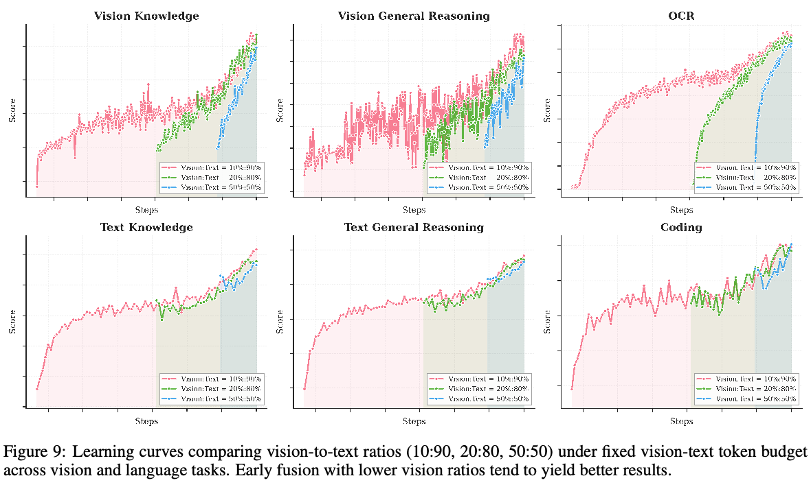
B 预训练
B.1 联合训练
我们在图 9 中进一步给出了所有配置的完整训练曲线。值得注意的是，在中期融合和后期融合阶段，我们观察到文本性能呈现“下降后恢复”的模式：首次引入视觉数据时，文本能力先下降，随后逐渐恢复。我们将这一现象归因于模态领域偏移——突然引入视觉 token 扰乱了已经建立的语言表征空间，迫使模型暂时牺牲文本专有能力，以实现跨模态对齐。
相比之下，早期融合在整个训练过程中保持了更健康、更稳定的文本性能曲线。通过从一开始就联合优化视觉与语言，模型自然形成统一的多模态表征，避免了后期领域迁移带来的冲击。这表明，早期接触不仅能够防止后期融合中观察到的表征坍缩，还能使两种模态的 gradient 景观更加平滑。总体而言，这些发现进一步支持我们提出的原生多模态预训练：在固定 token 预算下，适中的视觉比例与早期融合相结合，能够获得更好的收敛性质和更稳健的双模态能力。
B.2 文本数据
Kimi K2.5 的预训练文本语料包含经过精选的高质量数据，覆盖四个主要领域：网络文本、代码、数学和知识。大多数数据处理流水线遵循 Kimi K2 [53] 中描述的方法。对每个领域，我们都严格验证正确性和质量，并设计有针对性的数据实验，确保精选数据集兼具高度多样性与有效性。
增强代码智能。我们提高了代码核心数据的权重，显著扩充了：（1）支持跨文件推理和架构理解的仓库级代码；（2）捕捉实际开发模式的互联网 issue、代码评审和提交历史；（3）从 PDF 和网络文本语料中检索的代码相关文档。这些工作增强了复杂编程任务所需的仓库级理解，改善补丁生成和单元测试编写等 agent 编程子任务的表现，并增强代码相关知识能力。
B.3 视觉数据
我们的多模态预训练语料包含七类数据：描述、交错图文、OCR、知识、感知、视频和 agent 数据。描述数据 [49, 19] 提供基础模态对齐，并对合成描述施加严格限制，以缓解幻觉。来自书籍、网页和教程的图文交错数据 [81, 32] 支持多图像理解及更长上下文学习。OCR 数据涵盖多语言文本、密集布局和多页文档。知识数据包含通过版面解析器处理的学术材料，用于发展视觉推理能力。
此外，我们精选了专门的多模态问题求解语料，以增强科学、技术、工程和数学领域的推理。这些数据通过定向检索和网络爬取汇集；对于缺少明确问题形式的信息内容，我们采用上下文学习 [11]，将原始材料自动改写为从 K-12 到大学水平的结构化学术问题。为弥合视觉布局与代码数据之间的模态差距，我们加入大量图像与代码配对数据。它涵盖 HTML、React 和 SVG 等多种代码格式，配对相应的渲染截图，使模型能够将抽象结构逻辑与具体视觉几何对齐。
对于 agent 和时间理解，我们收集桌面、移动及网页环境中的 GUI 截图和动作轨迹，包括人工标注的示范。来自不同来源的视频数据同时支持小时级视频理解及细粒度时空感知。此外，我们加入定位数据来增强细粒度视觉定位，包括感知标注（边界框）和基于点的指代。我们还引入新的轮廓级分割任务 [51]，用于像素级感知学习。所有数据均经过严格过滤、去重和质量控制，以确保高度多样性与有效性。
C 基础设施
Kimi K2.5 在 NVIDIA H800 GPU 集群上训练，节点间采用 \(8\times 400\) Gbps RoCE 互连。我们采用灵活的并行策略，结合带虚拟阶段的 16 路 PP[27, 40]、16 路 EP[33] 和 ZeRO-1 DP，可在任意 32 的倍数个节点上训练。在交错 1F1B 调度下，EP 的 all-to-all 通信与计算重叠。为使激活满足 GPU 内存约束，我们对 LayerNorm、SwiGLU 和 MLA 上投影进行选择性重计算，将不敏感激活压缩为 FP8-E4M3，并以重叠流式方式将其余激活卸载到 CPU。
C.1 数据存储与加载
我们采用云服务商提供的兼容 S3 [3] 的对象存储方案来保存 VLM 数据集。为衔接数据准备和模型训练，我们保留视觉数据的原生格式，并构建了高效、适应性强的数据加载基础设施。它具有以下关键优势：
- 灵活性：支持整个训练过程中动态进行数据打乱、混合、分词、损失掩码和序列打包，能够随着需求变化调整数据比例；
- 增强：支持对视觉和文本模态进行随机增强，同时在几何变换中保持二维空间坐标和方向元数据的完整性；
- 确定性：通过精细管理随机种子和工作进程状态，保证训练完全确定，使任何训练中断都可无缝恢复；恢复后的数据序列与不中断运行完全一致；
- 可扩展性：通过分层缓存机制获得出色的数据加载吞吐量，稳健扩展到大型分布式集群，同时将对象存储请求频率控制在可接受范围内。
此外，为保持统一的数据集质量标准，我们构建了统一平台，负责数据注册、可视化、统计分析、跨云同步和全生命周期治理。
D 统一 Agent 强化学习环境
环境。为支持统一 agent RL，我们的 RL 框架提供标准化的类 Gym [10] 接口，简化不同环境的实现。这种设计使用户能够以极低开销实现并定制（续见下一页）
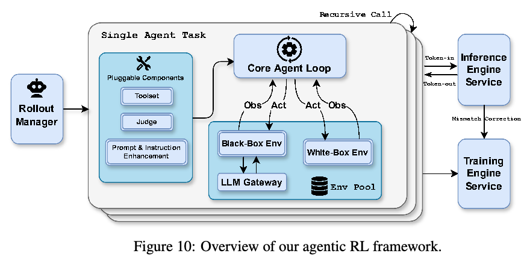
（接第 23 页）环境。我们的设计优先考虑可组合的模块化，整合了一组可插拔组件，例如支持多种沙箱工具的 Toolset 模块、提供多维奖励信号的 Judge 模块，以及用于提示多样化和增强指令遵循的专门模块。这些组件可与核心 Agent Loop 动态组合，提供高度灵活性并增强模型泛化。
在执行层面，我们的 RL 框架将每个 agent 任务视为独立的异步协程。每个任务都可以递归触发子任务 rollout，简化并行 agent RL 和 Agent-as-Judge 等复杂多 agent 范式的实现。如图 10 所示，专门的 Rollout Manager 在 RL 过程中编排最多 100,000 个并发 agent 任务，提供细粒度控制，以支持 partial rollout [31] 等功能。激活后，每个任务从受管理的池中获取一个配备沙箱和专用工具的环境实例。
推理引擎协同设计。我们的框架严格遵循 Token-in-Token-out 范式。我们还记录所有推理引擎输出的对数概率，以进行训练与推理不匹配校正，保证 RL 训练稳定。针对 RL 需求协同设计推理引擎，使我们能够通过定制 RL 推理 API 支持这些功能。
除完整的内置白盒环境集合外，还存在只能在标准 LLM API 协议下运行的黑盒环境，无法使用定制 API 协议提供的高级功能。为便于在黑盒环境中优化模型，我们开发了 LLM Gateway，一种代理服务，按照定制协议详细记录 rollout 请求与响应。
监控与调试。在确保正确性的同时优化高度并行异步执行系统的性能，是一项具有挑战性的任务。我们开发了一系列用于性能监控、性能剖析、数据可视化和数据验证的工具。我们发现，这些工具对于调试以及确保 agent RL 的效率和正确性至关重要。
E 评测设置
本节为表 4 中报告的所有基准提供完整的配置细节与测试协议。
E.1 通用评测协议
除非明确另有说明，Kimi-K2.5 的所有实验均采用以下超参数配置：
- Temperature：1.0
- Top-p：0.95
- 上下文长度：256k token
E.2 基线
对于基线模型，我们报告它们各自高性能推理配置下的结果：
- Claude Opus 4.5：Extended thinking 模式
- GPT-5.2：最高推理强度（xhigh）
- Gemini 3 Pro：High thinking level
- DeepSeek-V3.2：启用 Thinking 模式（用于纯文本基准）
- Qwen3-VL-235B-A22B：Thinking 模式（仅用于视觉基准）
在视觉和多模态基准中，GPT-5.2-xhigh 在视觉评测期间表现出约 10% 的失败率（即重试三次后仍未生成输出）。这些失败被视为错误预测，因此报告的分数可能是模型真实能力的保守下界。
此外，由于无法持续访问稳定的 GPT-5.2 API，我们跳过了 WideSearch 等评测成本较高的部分基准。
E.3 文本基准
推理基准。对于 HLE-Full、AIME 2025、HMMT 2025、GPQA-Diamond 和 IMO-AnswerBench 等高复杂度推理基准，我们设置最大生成预算为 96k token，以确保足够的推理深度。为减少随机推理路径带来的方差，AIME 2025 和 HMMT 2025（Feb）的结果取 64 次独立运行的平均值（Avg@64），GPQA-Diamond 则取 8 次运行的平均值（Avg@8）。
LongBench v2。为公平比较，我们使用与 [9] 相同的截断策略，将所有输入上下文统一至约 128k token。我们观察到，GPT5.2-xhigh 经常生成自由形式的问答式回答，而非要求的选择题格式。因此，我们报告 GPT5.2-high 的结果，它能够持续遵循预期输出格式。
E.4 图像与视频基准
所有图像和视频理解评测使用以下配置：
- 最大 token 数：64k
- 采样：3 次独立运行的平均值（Avg@3）
ZeroBench（使用工具）。多步骤推理评测采用受约束的逐步生成：
- 每步最大 token 数：24k
- 最大步数：30
MMMU-Pro。我们严格遵守官方评测协议：保留所有模态的输入顺序，并按照基准指南，将图像置于文本序列之前。
视频基准的采样策略。对于短视频基准（VideoMMMU、MMVU 和 MotionBench），我们均匀采样 128 个输入帧，最大空间分辨率为 896；对于长视频基准（Video-MME、LongVideoBench 和 LVBench），均匀采样 2048 帧，空间分辨率为 448。
专用指标。
- OmniDocBench 1.5：分数计算为
(1 − 归一化 Levenshtein 距离) × 100，数值越高，表示 OCR 和文档理解准确率越好。 - WorldVQA：可通过 https://github.com/MoonshotAI/WorldVQA 访问。该基准评测原子化、以视觉为核心的世界知识，需要细粒度视觉识别和地理理解。
E.5 编程与软件工程
Terminal Bench 2.0。所有分数均使用默认 Terminus-2 agent 框架及其提供的 JSON 解析器获得。需要指出，我们在非思考模式下评测，因为目前思考模式的上下文管理实现，在技术上与 Terminus-2 的对话状态处理不兼容。
SWE-Bench 系列。我们使用内部开发的评测框架，提供精简工具集：bash、create_file、insert、view、str_replace 和 submit。系统提示专门针对仓库级代码操作设计。所有 SWE-Bench 变体（Verified、Multilingual 和 Pro）均在非思考模式下取得最佳性能。
CyberGym。按照其技术文档的说明，该基准中的 Claude Opus 4.5 结果在非思考设置下报告。我们报告难度等级 1（主要设置）的分数。
PaperBench。我们报告 CodeDev 设置下的分数。
采样。所有编程任务结果取 5 次独立运行的平均值（Avg@5），以确保在不同环境初始化和非确定性测试用例顺序下的稳定性。
E.6 Agent 评测
工具设置。所有 agent 评测都为 Kimi-K2.5 配备网页搜索工具、代码解释器（Python 执行环境）和网页浏览工具，包括使用工具的 HLE 以及 agent 搜索基准（BrowseComp、WideSearch、DeepSearchQA、FinSearchComp T2&T3 和 Seal-0）。
上下文管理策略。为处理复杂 agent 任务天然具有的长轨迹，我们实现了领域专用上下文管理协议。除非下文另有说明，agent 评测不使用上下文管理；超过模型支持的上下文窗口的任务直接计为失败，而非截断。
- Humanity’s Last Exam（HLE）。对于工具增强 HLE 设置，我们使用 Hide-Tool-Result 上下文管理策略：当上下文长度超过预定义阈值时，仅保留最近一轮的工具消息（观测和返回值），同时完整保留此前所有步骤的推理链和思考过程。
- BrowseComp。BrowseComp 评测同时包含使用和不使用上下文管理的设置。在上下文管理设置下，我们采用 DeepSeek 提出的相同 discard-all 策略：一旦超过 token 阈值，就截断全部历史。
系统提示。所有 agent 搜索和 HLE 评测均使用以下统一系统提示，其中 DATE 动态设置为当前时间戳：
你是 Kimi，今天的日期：DATE。你的任务是通过使用各种工具、深入思考，并最终回答用户问题，帮助用户解决他们的问题。
在深度研究过程中，请严格遵循以下原则：
- 研究过程中始终聚焦用户的原始问题，避免偏离主题。
- 面对不确定信息时，使用搜索工具进行确认。
- 搜索时筛选高可信来源（如权威网站、学术数据库和专业媒体），对低可信来源保持批判性态度。
- 进行数值计算时，优先使用编程工具以确保准确性。
- 请使用
[^index^]格式引用你使用的任何信息。- 这是一个非常困难的问题——不要低估它。你必须使用工具辅助推理，然后解决问题。
- 在最终给出答案前，请回顾问题在问什么。
采样协议。考虑到搜索引擎结果排序的固有随机性和网页内容可用性的动态变化，Seal-0 和 WideSearch 的结果取 4 次独立运行的平均值（Avg@4）。除非明确另有说明，所有其他 agent 基准均只运行一次进行评测。
E.7 计算机使用评测
超参数设置。所有实验均设置 max_steps_per_episode = 100，OSWorld-Verified 使用 temperature = 0，WebArena 使用 temperature = 0.1。由于资源限制，所有模型均在单次尝试设置下评测。遵循 OpenCUA 配置 [63]，agent 上下文包含最近 3 张历史图像、完整思考历史和任务指令。对于 WebArena，我们人工修正评测脚本中的错误，并使用 GPT-4o 作为 fuzzy_match 函数的裁判模型。为确保公平比较，Claude Opus 4.5 仅使用计算机使用工具（不包括浏览器工具）进行评测，这与其系统卡配置 [6] 不同。
系统提示。我们对所有计算机使用任务采用统一系统提示：
你是一个 GUI agent。你将获得一条指令、一张屏幕截图，以及此前与计算机的交互。你需要执行一系列操作来完成任务。计算机密码是
{password}。每一步都按以下格式给出回答：
{thought} ## Action: {action} ## Code: {code}在代码部分，代码应为 pyautogui 代码，或以下函数之一，并放在代码块内：
- {"name": "computer.wait", "description": "Make the computer wait for 20 seconds for installation, running code, etc.", "parameters": {"type": "object", "properties": {}, "required": []}} - {"name": "computer.terminate", "description": "Terminate the current task and report its completion status", "parameters": {"type": "object", "properties": {"status": {"type": "string", "enum": ["success", "failure"], "description": "The status of the task"}, "answer": {"type": "string", "description": "The answer of the task"}}, "required": ["status"]}}
E.8 Agent Swarm 配置
工具设置。除附录 E.6 所述核心工具集（网页搜索、代码解释器和网页浏览）外，编排器还配备两个用于创建与调度子 agent 的专用工具：
create_subagent：使用自定义系统提示和标识符实例化专用子 agent，以便跨任务复用。assign_task：向已创建的子 agent 派发任务。
工具 schema 如下：
{
"name": "create_subagent",
"description": "Create a custom subagent with specific system prompt
and name for reuse.",
"parameters": {
"type": "object",
"properties": {
"name": {
"type": "string",
"description": "Unique name for this agent configuration"
},
"system_prompt": {
"type": "string",（工具定义续见下一页；代码按原文保留。）
（接第 27 页工具定义）
"description": "System prompt defining the agent’s role,
capabilities, and boundaries"
}
},
"required": ["name", "system_prompt"]
}
}
{
"name": "assign_task",
"description": "Launch a new agent.\nUsage notes:\n
1. You can launch multiple agents concurrently whenever possible,
to maximize performance;\n
2. When the agent is done, it will return a single message back to you.",
"parameters": {
"type": "object",
"properties": {
"agent": {
"type": "string",
"description": "Specify which created agent to use."
},
"prompt": {
"type": "string",
"description": "The task for the agent to perform"
}
},
"required": ["agent", "prompt"]
}
}
步数限制。在 Agent Swarm 模式运行时，我们为编排器和子 agent 设置计算预算。步数限制适用于工具调用和环境交互的合计次数。
- BrowseComp：编排器最多 15 步。每个生成的子 agent 最多 100 步（即每个子 agent 最多 100 次工具调用）。
- WideSearch：编排器和每个子 agent 的最大预算均为 100 步。
- In-house Bench：编排器最多 100 步。每个生成的子 agent 最多 50 步。
系统提示。
你是 Kimi，一位专业、细致的信息收集与整理专家。你充分理解用户需求，熟练使用各种工具，以最高效率完成任务。
# 任务描述
收到用户问题后，你需要充分理解其需求，并思考、规划如何高效、快速完成任务。
# 可用工具
为帮助你更好、更快地完成任务，我为你提供了以下工具：
- 搜索工具：你可以使用搜索引擎检索信息，支持并行处理多个查询。
- 浏览器工具：你可以访问网页链接（网页、PDF 等），获取页面内容，并执行点击、输入、查找和滚动等交互。
- 子 agent 工具：
create_subagent：创建具有唯一名称及清晰、具体系统提示的新子 agent。assign_task：向已创建的子 agent 委派任务。子 agent 也可以使用搜索与浏览器工具。- 其他工具：包括代码执行（IPython、Shell）。
E.9 GDPVal
我们引用 Artificial Analysis 的 GDPVal-AA 评测，表 4 中报告的分数反映截至 2026 年 1 月 28 日的官方排行榜指标。
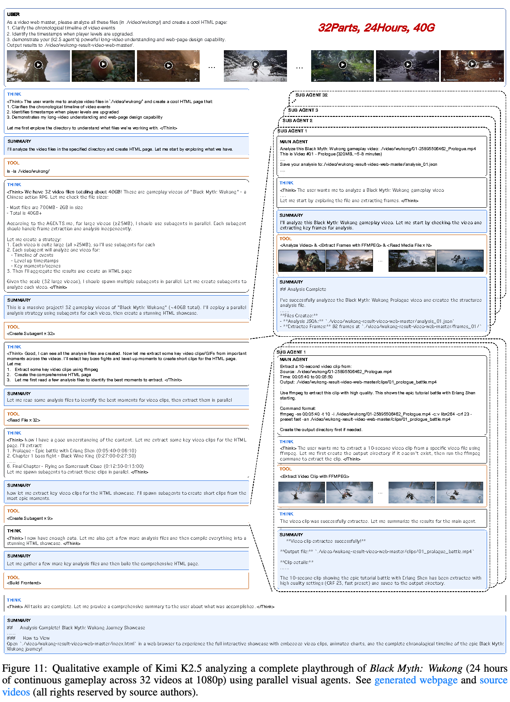
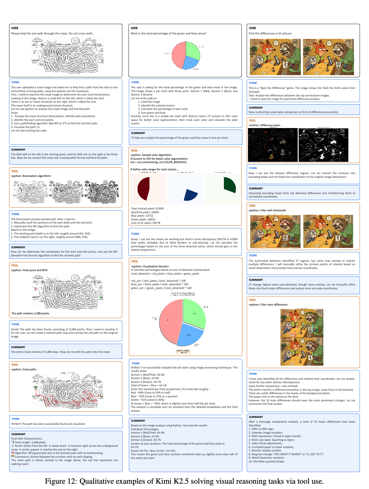
F 可视化
图 11 展示了我们的 Agent Swarm 处理一项具有挑战性的长视频理解任务：分析《Black Myth: Wukong》的完整通关过程（32 个视频中的 24 小时连续游戏，总计 40GB）。系统采用分层多 agent 架构，由一个 Main Agent 编排并行 Sub Agents，分别独立处理各个视频片段。每个子 agent 进行帧提取、时间事件分析及关键时刻识别（例如 Boss 战和升级）。随后，Main Agent 汇总这些分布式分析，生成全面的 HTML 展示页面，包含按时间排序的时间线、内嵌视频片段和交互式可视化。这一示例展示了系统通过并行化处理超大规模多模态内容，同时保持连贯长上下文理解的能力。
图 12 展示 Kimi K2.5 通过工具增强推理解决多样视觉推理任务的定性示例。模型展示了：（1）迷宫求解——处理二值图像分割，并实现寻路算法（BFS），穿过复杂迷宫；（2）饼图分析——执行像素级颜色分割和几何计算，确定精确面积比例；（3）找不同——采用计算机视觉技术，检测成对图像之间的像素级差异。这些示例凸显了模型将复杂视觉问题分解为可执行代码、根据中间结果迭代改进策略，以及通过定量视觉分析综合得出精确答案的能力。